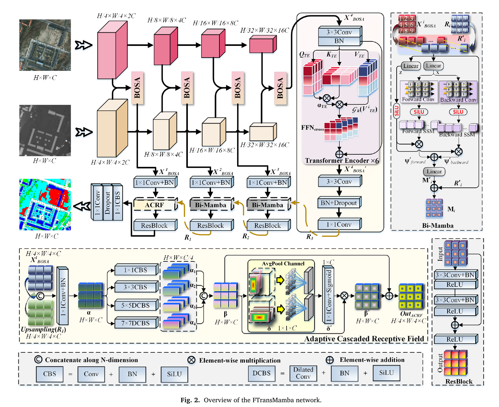
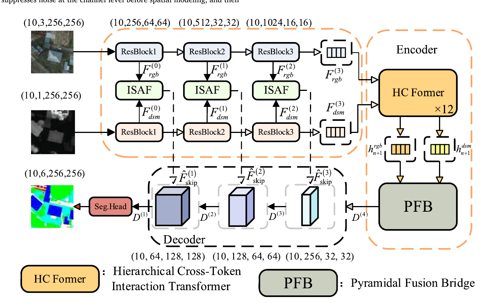
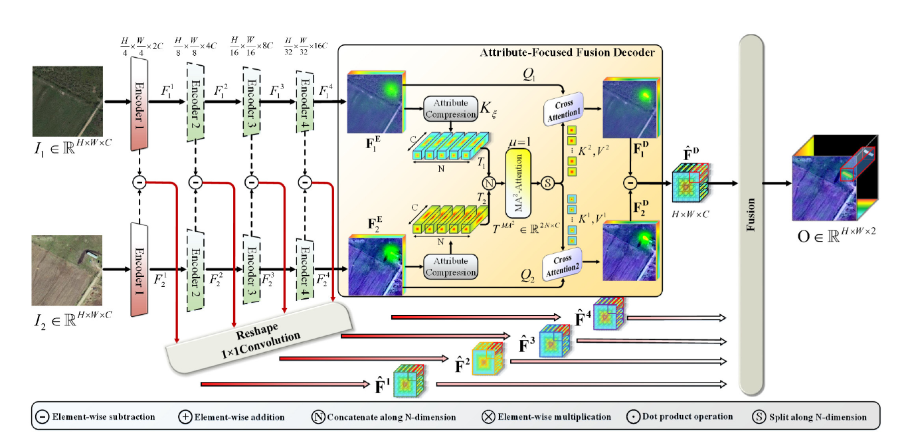
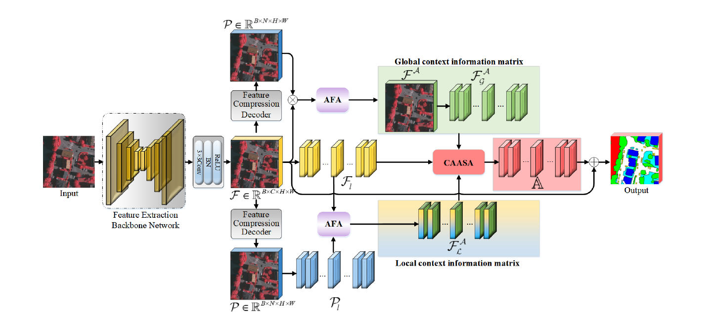
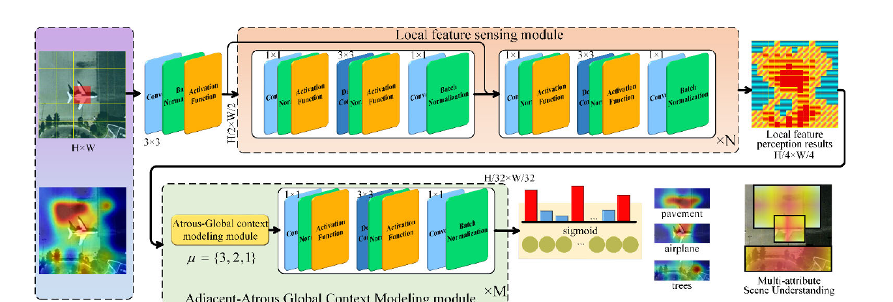

01 · 多模态遥感场景理解
Transformer-Mamba 多阶段融合
面向光学影像与 DSM、SAR 等异构遥感数据，研究多阶段跨模态特征交互与长距离依赖建模。FTransMamba 在双流编码过程中逐级交换互补信息，并在高层引入 Transformer、在解码端结合双向 Mamba 与自适应级联感受野，从而兼顾全局语义、局部结构和目标边界。

本人主要围绕高分辨率与多模态遥感影像智能理解开展研究，重点关注复杂场景中的跨模态信息融合、像素级语义分割、双时相变化检测、多属性语义建模，以及局部细节与全局上下文的协同表征。相关工作综合采用 CNN、Transformer、Mamba、跨注意力与多尺度特征融合等方法，形成了从场景感知、特征交互到精细预测的完整研究链路。
01 · 多模态遥感场景理解
面向光学影像与 DSM、SAR 等异构遥感数据，研究多阶段跨模态特征交互与长距离依赖建模。FTransMamba 在双流编码过程中逐级交换互补信息，并在高层引入 Transformer、在解码端结合双向 Mamba 与自适应级联感受野，从而兼顾全局语义、局部结构和目标边界。

02 · 多模态遥感语义分割
针对浅层特征易受模态偏移影响、深层特征存在语义鸿沟的问题，HDC-Net 按网络层次分配不同融合任务：ISAF 在浅层完成通道选择与空间协同校准，HCFormer 在深层建立跨模态 Token 交互，PFB 将融合后的高层语义重新分配到多尺度解码路径。

03 · 遥感图像变化检测
面向双时相遥感影像中尺度差异、伪变化和细粒度目标难以识别的问题，MNDAF-Net 逐级提取并解耦不同邻域范围的变化属性，再通过属性聚焦融合解码器对双时相信息进行交互，汇聚多尺度差异特征并生成像素级变化图。

04 · 多属性场景语义理解
复杂遥感场景中，同类地物可能具有不同外观，不同类别也可能表现出相似纹理。CADANet 通过属性特征聚合模块同时建立全局与局部上下文关系，并利用属性感知空间聚合抑制背景噪声和属性混淆，提升多属性场景分析的一致性与边界表达能力。

05 · 遥感图像智能识别
针对遥感影像中目标尺度差异大、属性共现关系复杂的问题，Adjacent-Atrous 方法将局部特征感知与邻接空洞全局上下文建模结合，在控制计算开销的同时扩展有效感受野，并通过类别响应增强对多属性场景中关键区域与语义关系的识别。

研究新闻标题生成、文本分类、多轮对话系统和知识增强文本生成等任务，关注语义表示、注意力融合与生成质量优化。
结合深度学习、多源监测数据融合与工程安全评价，研究尾矿库状态感知、边坡稳定性分析和智能预警系统。